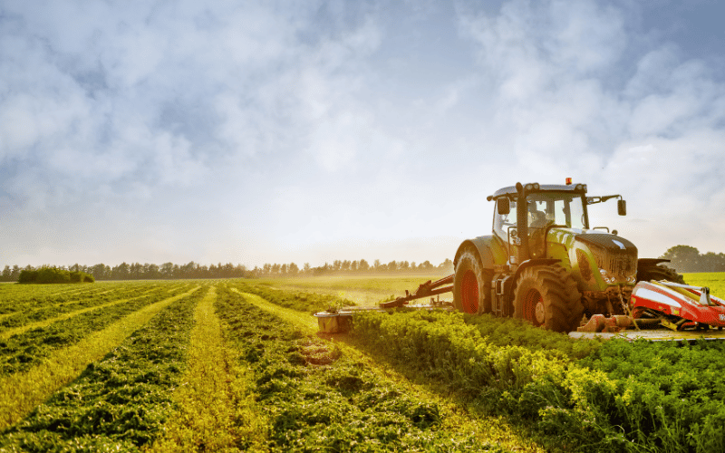
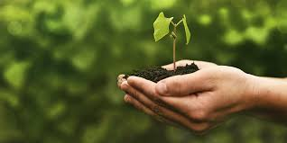
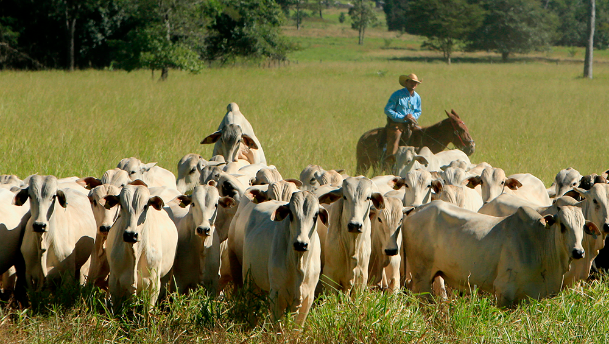
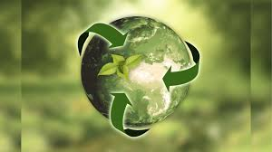

O setor agropecuário é uma das principais bases da economia brasileira, sendo responsável pela produção de alimentos, fibras e bioenergia. Ele engloba atividades como agricultura, pecuária, aquicultura e a produção de insumos agrícolas. Esse setor contribui significativamente para o crescimento do PIB, a geração de emprego e o abastecimento de mercados internos e internacionais.
A agricultura no Brasil é uma das mais avançadas do mundo, destacando-se pela produção de grãos como soja, milho e arroz, além de frutas tropicais e café. Com o uso de tecnologia de ponta e práticas sustentáveis, o país tem sido um grande exportador e contribui para a segurança alimentar mundial.
O Brasil também é um grande produtor e exportador de carne bovina, suína e de frango. A pecuária é responsável por grande parte das exportações agrícolas e é uma fonte importante de proteína para o consumo humano. No entanto, há um crescente movimento de valorização de práticas sustentáveis, como a pecuária regenerativa, que busca minimizar os impactos ambientais.
O setor agropecuário enfrenta desafios, como a sustentabilidade ambiental, o uso de recursos naturais e o manejo de resíduos. Contudo, a inovação e a pesquisa científica estão transformando esses desafios em oportunidades, com a adoção de novas tecnologias que promovem a produção de alimentos com maior eficiência e menor impacto ambiental.
